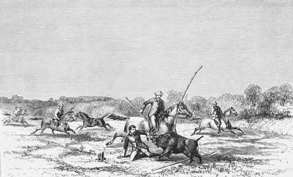

Boar-rips. A ripping affair
Description
This section is from the book "Hog Hunting In The East, And Other Sports", by J. T. Newall. Also available from Amazon: Hog Hunting in the East, and Other Sports.
Boar-rips. A ripping affair
" The second of the other party had been obliged to pull in as all this occurred, and now urged his horse at a slow pace towards the boar, who was standing at bay with champing tusks. As is often the case when a charging pig is approached too slowly, the old hunter which the man was riding, swerved when close on to the boar, and just as his rider had leant far forward out of his saddle to spear it. This made him lose his seat, and he fell, overbalanced, directly in front of the infuriated beast.
" As I wheeled my horse, there was H--on the ground, struggling on his knees to scramble away, and with the natural impulse of an Englishman using his fists in self-defence. He hit out freely, but that could not prevent the stroke of the terrible tush.
" Before the nearest horseman, who was my original antagonist, could come to the rescue, the boar had been diligently digging away at the body of his prostrate adversary, and, as it turned out, with effect. Once, too, it seized him in its mouth by the shoulders, but eventually had its attention diverted by a hearty prod from B--, and poor H---was enabled to recover his legs, and get away. A young brother of my own, who was, to my great satisfaction, imbibing, with his initiatory lessons, a love for the sport, then came up with several others, and shortly the boar by this time at the very edge of the river was so full of spears, either whole or broken, that it was dimcult to approach him. He had been fighting so vigorously, and it was altogether such a scrimmaging affair, that no death-wound had yet been dealt. The poor beast was, however, not fated to escape. Some of the men with second spears had come up near, and, at last, the gallant boar was gathered to his fathers.
A ripping affair.
" On examination it was found that H-'s wounds were serious, but not so much so as they might have been. He had received one gash across the inside of the thigh, only just avoiding the femoral artery. The whole length of the tush had been buried in a fleshy portion of the body, and there was a considerable injury in the shoulder from the bite. It was some time before the wounds healed ; but as the old rhyme says—
' From rip of boar, though, very sore, There is not much to fear; But bad the smart from horn of hart, 'Twill bring thee to thy bier.' *
" Agreeably with this saying, they did not prove dangerous from inflammatory consequences. Indeed, with the pluck of a keen English sportsman, H attended a crack hunting meet in the following week, though his wounds were by no means then healed.
" There now, I have opened the ball with a hunting experience; let somebody else follow my example, though I hope more efficiently."
* Slightly altered from the original, which I can neither find nor perfectly recall.
Continue to:
- prev: Bound the camp-fire
- Table of Contents
- next: A narrow squeak